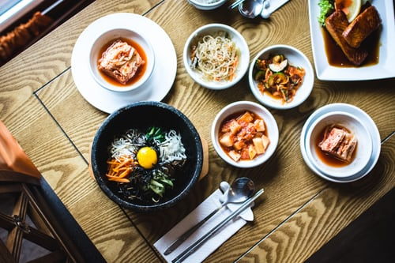

Type of Korean Food
pepper sauce base
Soy sauce base
Representative Korean Food
BibiBap
Ingredients
rice,vegetable,pepper paste,egg
How to make it
Prepar the rice.
Put the vegetable on the rice.
Put the egg yolk.
Enjot the Bibimbop.
